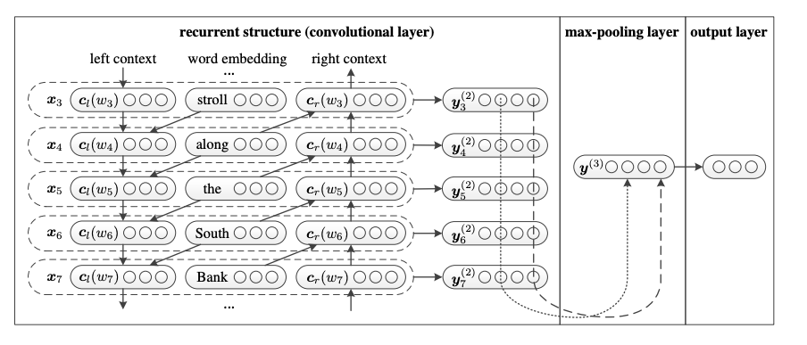

模型
论文：Recurrent Convolutional Neural Networks for Text Classification
单词表示学习
单词左侧的上下文向量表示为:
单词右侧的上下文向量表示为:
参数表示单词的词嵌入向量
函数f时激活函数
任意文档的第一个单词的左侧的上下文向量使用相同的共享参数来表示。
任意文档的最后一个单词的右侧的上下文向量使用相同的共享参数来表示。

本例中使用的示例句子为:”A sunset stroll along the South
Bank affords an array of stunning vantage points.”
关于为单词的嵌入向量表示。
此处为潜在语义向量。
通过使用循环神经网络来获取和的信息。
文本表示学习
max-pooling 层:
作用：
- 得到固定长度的向量，即为固定长度的向量。
- 获取最能表示文本意思的潜在语义信息。
输出层：
softmax层：
论文复现
1 | class TextRCNN(object): |